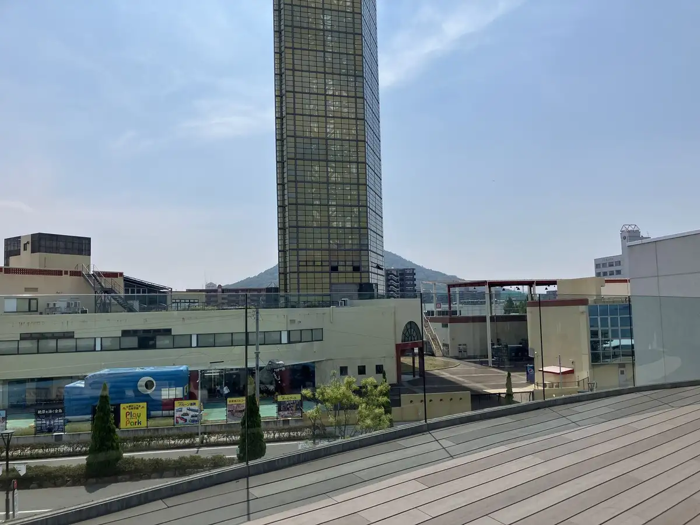
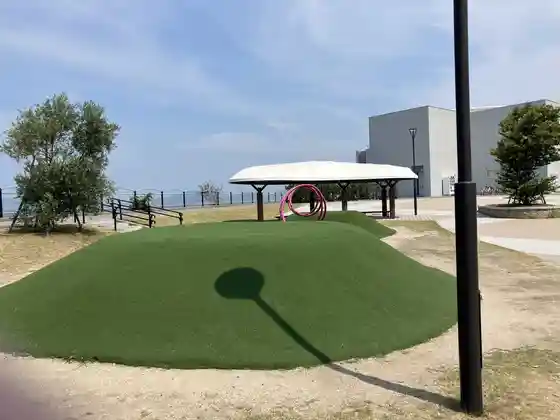
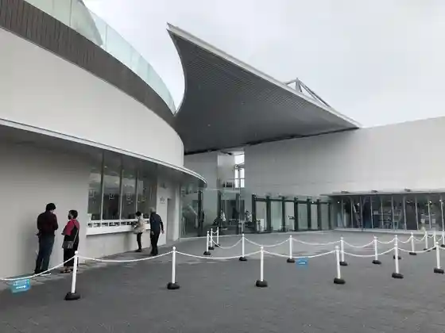
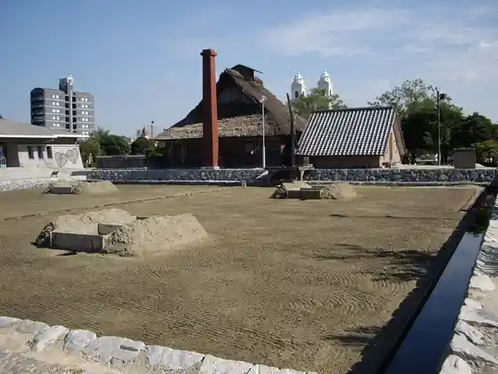

Utazu
Utazu · Kagawa
Utazu
Highlighted on the Kagawa map.

Stay
Utazu Gu Land Hotel
Hotel Aneshisu Seto Bridge
Ko Machi no Ie
Chiiori Utazu Branch
HOTEL AZ Kagawa Utazu Mise
Chiisa Na Hotel Misesu Maruberii
Sanuki no Yado Shio Gama
Dining
Jun Tokoro Sakae
Ware Wari Shokudo
Uotami Utazu Mise
Yakiniku Hirai Utazu Mise
Utazu Horumon
Seishun no Osobayasan
Marugame Hone Tsuki Tori Itcho Utazu Mise
Jinambo Utazu Mise
Merikenya Kakehashi Mise
Yu Shoku Bo Ya Utazu Mise
Men Tokoro Tadeya
Pikopiko Seinikuten Utazu
Seto Park
Eko Land Utari Tsu
Tsurugi
Ho no Kaori
Onsen
Utazu Gu Land Hotel Public Bath
Experience
Roadside Station Koibito no Seichi Utazu Rinkai Park
Sights
Gorudotawa
Utazu Rinkai Park

Shikoku Aquarium

Fukugen Shioda

Utazu Eki
Ao no Yama